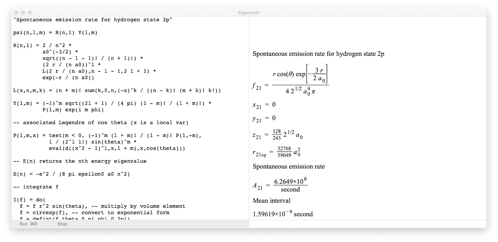

Eigenmath manual
Quick reference
Examples (Demo scripts can be pasted into the Eigenmath app)
Maxwell-Boltzmann distribution
▹ Demo
How Einstein derived Planck's law
▹ Demo
Spontaneous emission rate
▹ Demo
Balmer's formula
▹ Demo
Coherent state
▹ Demo
Klein-Gordon equation
▹ Demo
How Planck calculated h and k
▹ Demo
Electrons in a box
▹ Demo
Spin
▹ Demo
Spin operator table
▹ Demo
Dirac equation
▹ Demo
Dirac spinors
▹ Demo
Helium
▹ Demo
Schwarzschild metric
▹ Demo
Static spherical metric
▹ Demo
Muon decay
▹ Compute muon lifetime
▹ Verify density formula
(Run time is about 1 minute on Safari, click through alerts on other browsers)
▹ Verify Casimir trick
Electron scattering
▹ Verify Casimir trick
▹ Verify formulas
▹ Draw probability density
Rutherford scattering
▹ Verify formulas
▹ Draw probability density
Compton scattering
▹ Verify Casimir trick
(Safari recommended, click through alerts on other browsers)
▹ Verify formulas
▹ Verify lab frame formulas
▹ Draw probability density
▹ Compton scattering data from CERN LEP
(R² = 0.97)
Bhabha scattering
▹ Verify Casimir trick
▹ Verify formulas
▹ Draw probability density
▹ Bhabha scattering data from SLAC SPEAR
(R² = 0.99)
▹ Bhabha scattering data from DESY PETRA
(R² = 0.99)
Annihilation
▹ Verify Casimir trick
▹ Verify formulas
▹ Draw probability density
▹ Annihilation data from DESY PETRA
(R² = 0.98)
Muon pair production
▹ Verify Casimir trick
▹ Verify formulas
▹ Draw probability density
▹ Muon pair production data from SLAC PEP
(R² = 0.87)
▹ Electroweak model
(R² = 0.98)
Hydrogen atom
▹ Bohr radius and Rydberg unit of energy
▹ Radial eigenfunctions
▹ Normalization
▹ Draw radial probability densities
▹ Complete solution
Spontaneous emission coefficients for H-α
▹ Compute coefficients
▹ Transition probabilities
Quantum computing
▹ Grover search algorithm
▹ Bernstein-Vazirani algorithm
▹ Phase estimation
▹ Order finding demo
▹ 1 + 1 = 2
More examples
▹ Quaternions
▹ Octonions
▹ Sedenions
▹ Musical notes
▹ Verify quantum LRL operators
▹ Rydberg unit of energy
▹ Stokes' theorem
▹ Green's theorem
▹ Spherical harmonics
▹ Legendre polynomials
▹ Laguerre polynomials
▹ Dirac equation (32)
Solutions to Quantum Mechanics The Theoretical Minimum
Solutions to Quantum Mechanics and Path Integrals
Solutions to Quantum Mechanics for Scientists and Engineers
Solutions to Quantum Field Theory for the Gifted Amateur
Additional resources
LindnerDrWG.github.io
evalgebra.org